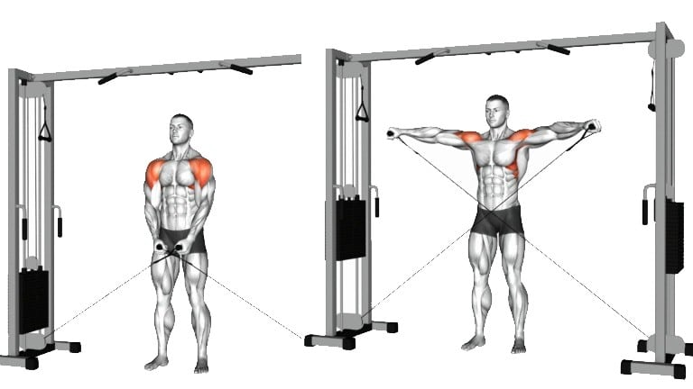
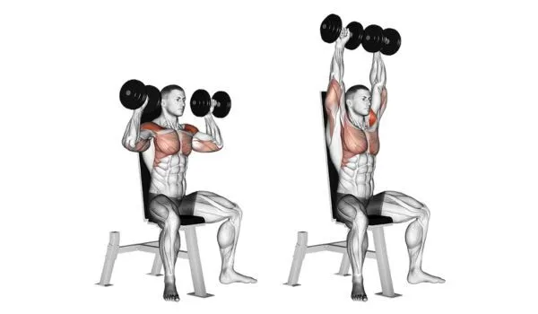
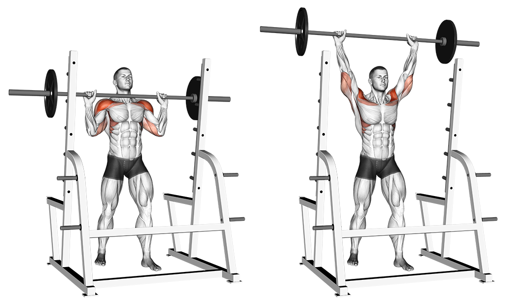
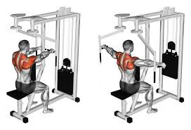

Cable Lateral Raise
Step:1 Ensure both cables are set to the same length from the ground
Step:2 Grab the handles from each cable and center yourself
Step:3 The starting position should be both handles right in front of you
Step:4 Raise both arms vertically to the side of you while maintaining a straight wrist
Step:5 Lower both arms in a slow and controlled manner
Seated Dumbbell Press
Step:1 Place a bench into the seated position and sit with dumbbells on knees
Step:2 Use your knees to get the dumbbells into the air
Step:3 Establish a strong foundation by driving your legs into the ground and spreading your knees
Step:4 while maintaining vertical forearms lower the weight to form a 45 degree bend in the elbow
Standing Military Press
Step:1 Place a bar on the rack as to ensure the bar is below your shoulders
Step:2 Grab onto the bar with a grip slightly wider than shoulder width
Step:3 Slightly squat under the bar and stand as to un-rack the bar
Step:4 Press the bar above to the sky with the elbows starting at a 45 degree angle
Step:5 Slowly and controlled lower the bar back to the starting position
Rear Deltoid Fly
Step:1 Adjust the seat to ensure that feet are flat on the ground while maintaining a straight back position
Step:2 Select the proper weight it is recommended for beginners to go light
Step:3 Ensure the machine is at the appropriate starting point (which is handles in front of one)
Step:4 Grab the handles and while keeping the arms straight pull the handles to the side of your body
Step:5 Slowly and controlled return to the starting position